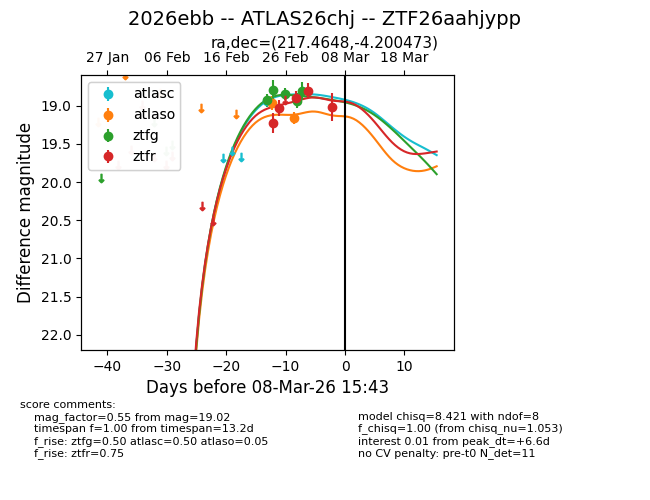
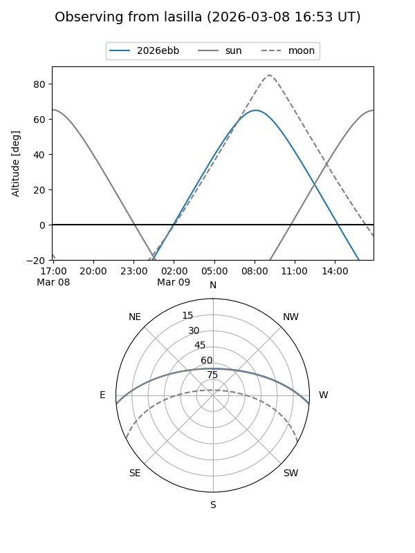
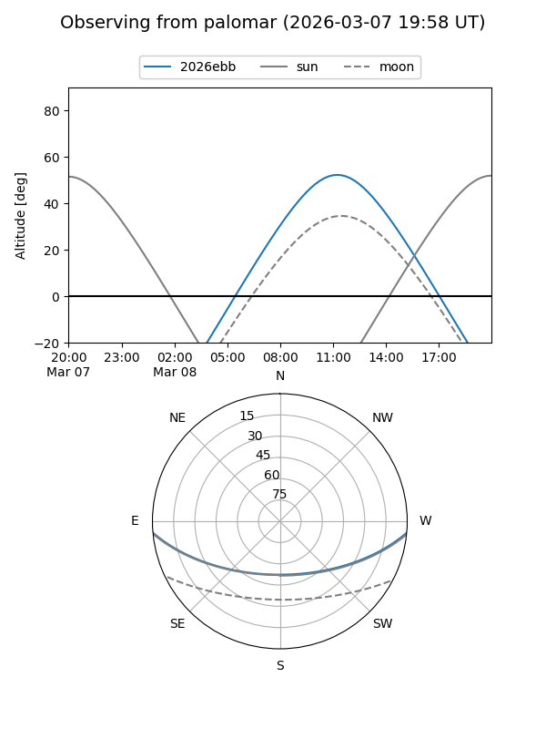
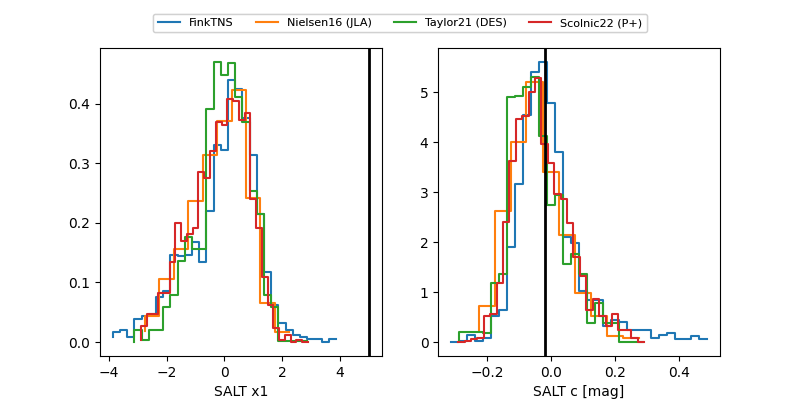

2026ebb
Target 2026ebb at 2026-03-08 15:44
Aliases and brokers:
FINK: link
Lasair: link
ALeRCE: link
TNS: link
YSE: link
alt names
ZTF26aahjypp (ztf,fink_ztf)
2026ebb (tns,yse)
ATLAS26chj (atlas)
Coordinates:
equatorial (ra, dec) = 217.4648,-4.20047
equatorial (HMS+DMS) = 14:29:51.55,-04:12:01.70
galactic (l, b) = (343.8745,+50.67847)
Flags:
Photometry:
last atlasc=18.94, atlaso=19.16, ztfg=18.80, ztfr=19.02
1 atlasc, 2 atlaso, 5 ztfg, 5 ztfr detections
Lightcurve

Visibility


Additional plots
